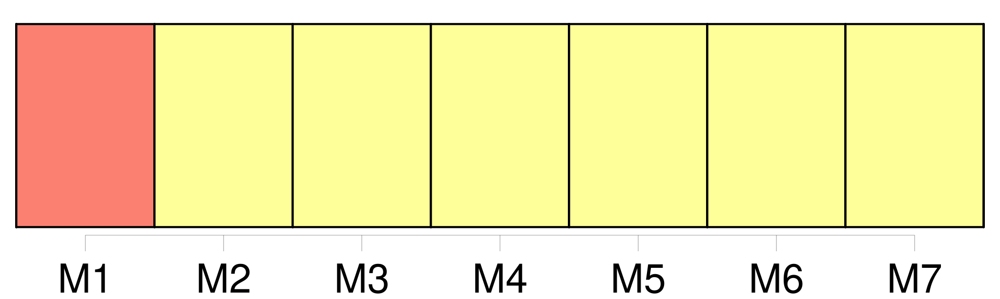
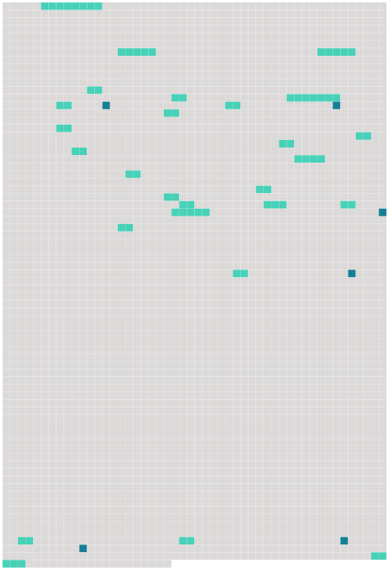

Longueur nb maillons : 32 mentions |
 |
Ces animaux se caractérisent par [des bandes de rayures verticales noires et blanches] [8 phrases]
Zébrures Grâce à 35 des méthodes de 36 reconnaissance de 37 formes, les scientifiques peuvent désormais lire [les rayures caractéristiques des zèbres] comme 39 des codes-barres pour recenser 40 une population à partir de 41 photographies. [8 phrases]
74 Formation [des rayures]
77 Les spécialistes pensent généralement, en observant 78 les rayures partielles du Quagga et en tenant compte de 79 la pigmentation nécessaire aux animaux pour survivre sous 81 le soleil d'Afrique, que les zèbres étaient originellement 80 des animaux pigmentés de noir et que [les raies] se forment par 83 inhibition de 84 la production de 85 mélanine. [Les raies noires et blanches du zèbre] sont absentes 82 au stade fœtal initial, ils sont entièrement noirs. [Les rayures] finissent par apparaître par [bandes] d'86 environ quatre cents micromètres ( 87 vingt fois 88 une cellule ). [Les rayures] sont alors d'autant plus nombreuses que l'animal est gros. [Elles] grandissent ensuite avec lui.
Selon 89 J. B. L. Bard, 90 les espèces de zèbres différeraient selon le stade embryonnaire auquel apparaissent [les raies] [1 phrases]
Ainsi l'évolution vers [des rayures] au lieu de taches n'est pas difficile et dépendra de 104 la taille et 105 du temps de 107 gestation de 108 l'espèce. 109 Ceci conforte la théorie du Dr Debra Kay Bennett selon laquelle les espèces de zèbres sont, 110 chacune, plus proche d'111 une espèce de cheval que de 112 ses consœurs car « il suffit d’ 113 une petite modification 114 des relations temporelles des processus qui sous-tendent 115 la formation otif du motif » pour faire apparaître [des rayures] au lieu de taches. [1 phrases]
117 Rôle
121 Les principales hypothèses sur la fonction [des zébrures] concerneraient 124 le camouflage, 118 l'évasion face aux prédateurs, la thermorégulation et 123 les interactions sociales ; toutefois, selon 125 une étude multifactorielle publiée en 126 2013, rien ne vient étayer de 127 manière convaincante 130 128 l'une ou 129 l'autre de 131 ces hypothèses. 132 Au 19e siècle, 133 l'écrivain Rudyard Kipling et le naturaliste Alfred Russel Wallace ont contribué à diffuser l'hypothèse selon laquelle [les rayures du zèbre] lui permettaient de mieux se fondre dans la savane. [3 phrases] [Les rayures] auraient aussi 141 un effet stroboscopique sur les prédateurs. [2 phrases] Dans 152 les années 1970, 153 des recherches ont pointé le fait que 154 la mouche tsé-tsé, responsable de aladieSommeil la maladie 156 du sommeil à aladieSommeil laquelle les zèbres sont plus sensibles que 155 d'autres animaux sauvages, est attirée par 157 la vue de 158 larges zones monochromes : [les rayures] permettraient ainsi de se protéger du parasite. Il est à 160 ce sujet significatif de constater que 164 161 les zones de 162 répartition des zèbres et de 163 ces glossines coïncident exactement et que [les rayures] s'estompent chez 165 les populations moins exposées au parasitisme par 167 les trypanosomes.
159 Des travaux publiés en 166 2012 viennent corroborer 168 cette hypothèse, en démontrant que 169 les taons sont plus attirés par 170 les monochromes, et que 171 l'effet « répulsif » [des rayures] est plus prononcé pour 172 des rayures semblables à [celles des zèbres] 173 Une autre hypothèse veut que [les rayures] contribueraient à la thermorégulation, permettant aux zèbres qui broutent pendant 122 des heures de mieux supporter 174 les fortes chaleurs de la savane africaine. [Les bandes noires et blanches] , par 177 175 absorption et 176 réflexion différentielle 178 des rayons solaires, chauffent différemment, 179 ce qui provoquerait entre [elles] 180 un flux d'air différentiel à 181 l'origine de 182 tourbillons engendrant 183 un effet de 184 refroidissement. [1 phrases] [Les rayures] favoriseraient 193 la cohésion sociale en facilitant 194 la reconnaissance et 195 l’ identification de 196 chaque individu d'197 un groupe grâce 198 au dessin de 199 rayures unique. [6 phrases]
[Leurs rayures] provoquent aussi 241 une sorte d'« 242 effet stroboscopique », et [rendent] 243 les individus difficiles à repérer lorsqu'ils courent en 244 groupe. [48 phrases]
463 Proverbes [1 phrases]
Ainsi, le zèbre est 481 le symbole animal du Botswana : [ses rayures noires et blanches] ornent 483 le drapeau depuis 484 1996 et 485 deux zèbres affrontés encadrent 486 les armoiries du pays. |
 |
Il est possible de télécharger la ressource sur la page Ortolang |
Si vous avez des questions ou vous voyez des erreurs, merci d'envoyer un mail à silvia.federzoni89@gmail.com |